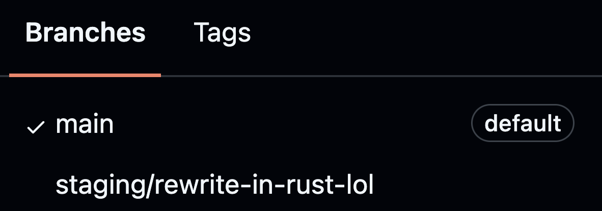

Instant feedback, robust evals with blendtutor
Deterministic
Dynamic
General
Personalized
Pipe dream?

A working lesson and its evals, out of the box.
Author, check, try — before a student ever sees it.
--target pyodide for Python.
github.com/mcmullarkey/blendtutor
buttondown.com/datadash